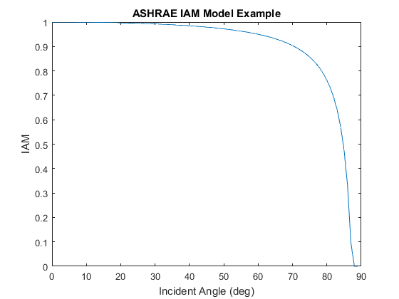

pvl_ashraeiam
Determine the incidence angle modifier using the ASHRAE transmission model.
Contents
Syntax
- IAM = pvl_ashraeiam(b, theta)
Description:
Calculates the incidence angle modifier as developed in [1], and adopted by ASHRAE (American Society of Heating, Refrigeration, and Air Conditioning Engineers) [2]. The model is used by modeling applications such as PVSyst [3].
Note: For incident angles near 90 degrees, the ASHRAE model has a discontinuity which has been addressed in this function.
Inputs:
- b - A parameter to adjust the modifier as a function of angle of incidence. Typical values are on the order of 0.05 [3].
- theta - The angle of incidence between the module normal vector and the sun-beam vector in degrees. Theta must be a numeric scalar or vector. For any values of theta where abs(theta)>90, IAM is set to 0. For any values of theta where -90 < theta < 0, theta is set to abs(theta) and evaluated. A warning will be generated if any(theta<0 or theta>90). For values of theta near 90 degrees, the ASHRAE model may be above 1 or less than 0 due to the discontinuity of secant(theta). IAM values outside of [0,1] are set to 0 and a warning is generated.
Outputs:
- IAM - The incident angle modifier calculated as 1-b*(sec(theta)-1) as described in [2,3]. IAM is a column vector with the same number of elements as the largest input vector.
Example
This example plots the IAM over a range of incident angles.
b=0.05; %Typical value. theta = 0:89.9; %angles =>90 generate a warning IAM = pvl_ashraeiam(b, theta); figure plot(theta,IAM) xlabel('Incident Angle (deg)') ylabel('IAM') title('ASHRAE IAM Model Example')
Warning: It seems that we have encountered a discontinuity in pvl_ashraeiam. Any incident angle modifiers calculated to be less than 0 or greather than 1 have been set to 0.
Note that the function can result in IAM values <0 and/or >1. When this occurs the out of range results are set to equal zero and a warning is reported.
References:
- [1] Souka A.F., Safwat H.H., Determindation of the optimum orientations for the double exposure flat-plate collector and its reflections, Solar Energy vol .10, pp 170-174. 1966.
- [2] ASHRAE Standard 93-2010, Methods for Testing to Detemrine the Thermal Performance of Solar Collectors.
- [3] PVsyst Contextual Help. http://files.pvsyst.com/help/index.html?iam_loss.htm retrieved on September 10, 2012.
See also
pvl_getaoi , pvl_ephemeris , pvl_spa , pvl_physicaliam
Copyright 2014 Sandia National Laboratories